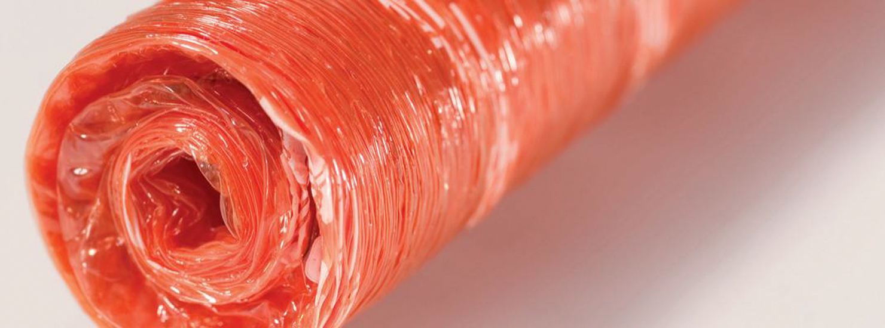
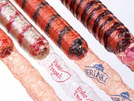

Tripa
Celulosa
Wienie-Pak – Printed Smash
Las Wienie-Pak impresa es una funda de celulosa que combina alta productividad y manejo fácil con el mayor atractivo de sus productos. Se pueden imprimir los logotipos del cliente o según los requerimientos específicos del cliente para lograr un producto final bello y atractivo. La funda Wienie-Pak impresa está diseñada para los clientes cuyas salchichas se venden con funda, sin pelarlas. Combina excelentes características técnicas con la posibilidad de imprimir según se requiera. Ofrecemos una gama completa de colores que coincidirán precisamente con el diseño que desee.

Las fundas Wienie-Pak pueden imprimirse en diferentes colores, según su diseño y requisitos.

Una muy buena manera de lograr visibilidad en el mercado y en las tiendas es imprimir su propia marca en la funda. Esto puede combinarse con la identificación del producto para una manera completa y única de promover su marca en el mercado de manera segura.
Mediante el uso de una funda de color como base, se crea un paquete muy bonito que apoyará y destacará su producto único muy visiblemente en la cadena minorista.
Con Wienie-Pak nunca tendrá que sacrificar la rentabilidad por el aspecto. Podemos ofrecer impresión monocroma en uno o ambos lados, lista para uso a partir de la caja.
Ya que la Wienie-Pak impresa puede utilizarse como paquete final, lo que resulta es un producto ecológicamente inocuo. Ya que Wienie-Pak es completamente biodegradable, se crea un paquete sin efectos en el medio ambiente y es higiénicamente seguro si se lo trata bien.
Wienie-Pak tiene una combinación única y excelente de propiedades de estiramiento y contracción, un gran beneficio ya que ayuda a maximizar el peso de embutido. Todo el proceso de producción de Wienie-Pak se realiza con un alto nivel de gestión de calidad y nuestro objetivo es siempre proveerle de un producto de calidad superior.